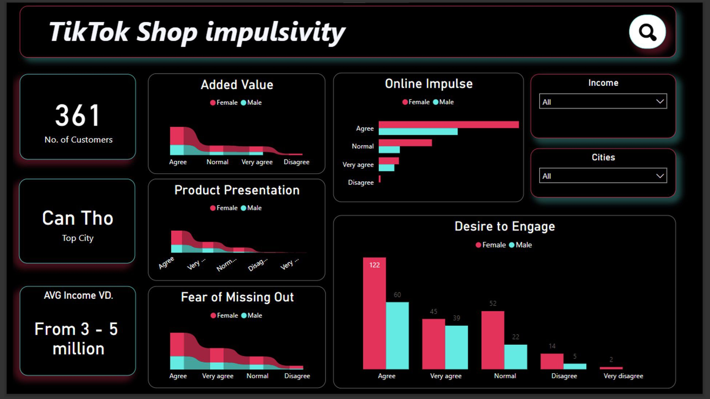
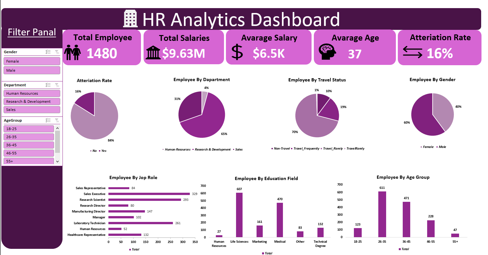
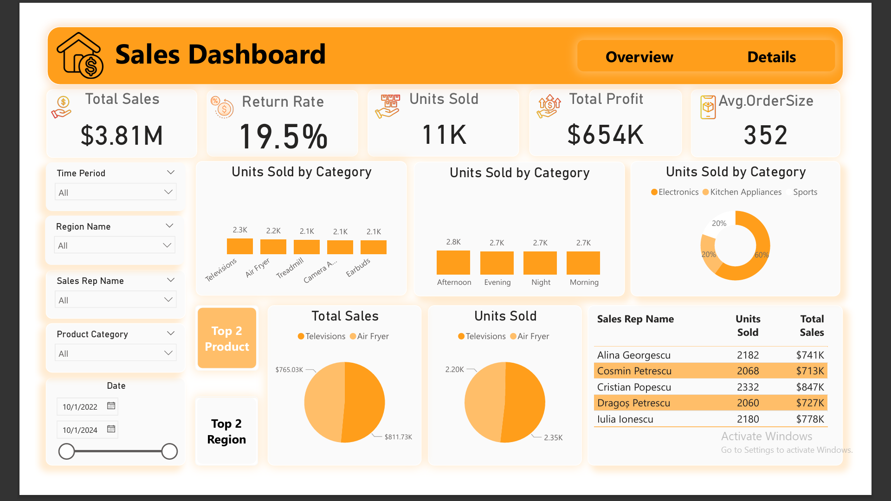
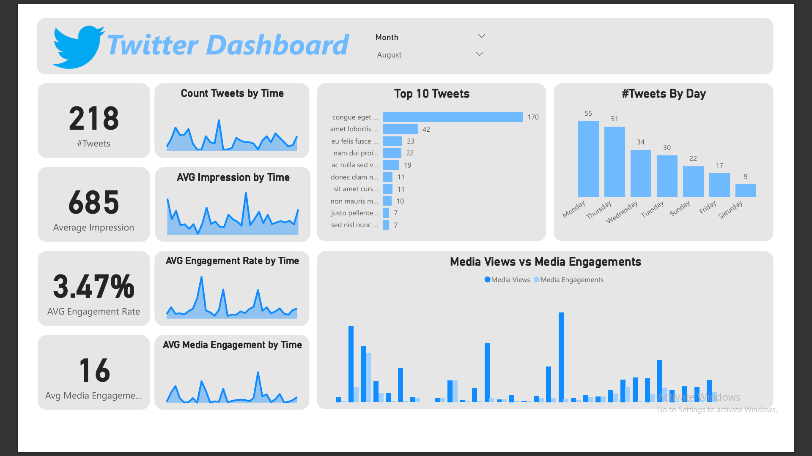
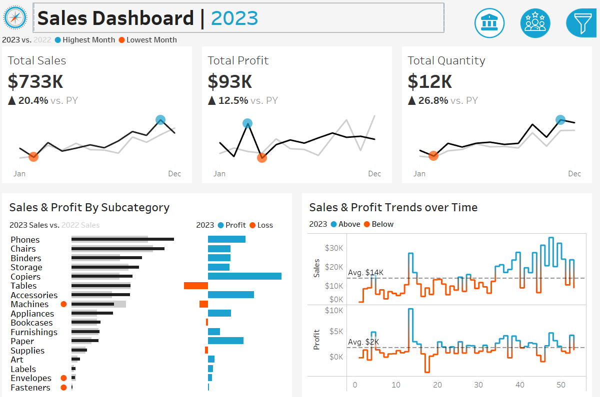

Data-driven professional with a passion for uncovering insights and translating them into actionable solutions using Python, SQL, Power BI, and more.
Driven by a deep curiosity to understand data and its impact across domains, I bring a strong foundation in data analysis principles and practices — from initial collection through to clear, compelling communication.
Proficient in a range of programming languages, data visualization tools, and statistical methods. Committed to continuous learning and staying current with the latest advancements in data analytics.
Faculty of Computer & Artificial Intelligence · 2020–2024





Eager to contribute to a team that values innovation and data-driven decision-making. Reach out and let's talk.